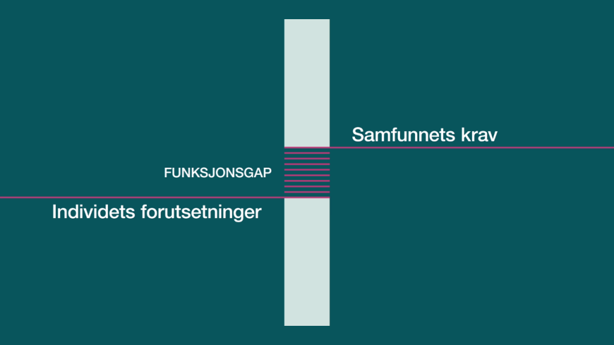

UU vs. SEO
Universell Utforming
Universell utforming en metode for å gjøre nettsiden din tilgjengelig og likt for alle. UU kan for eksempel være at det er høy kontrast mellom tekst og bilde beskrivelse. I norge har vi UUtilsynet som sjekker om side oppfyller kravende, om ikke kan det resultere i bøter. Det har blitt kjent at dårlig UU kan være diskriminerende mot funksjons hemende personer.
Hvorfor UU?
Universell utforming bygger på tanken om at tjenester skal være tilgjengelige for alle, uavhengig av alder, funksjonsevne og utdannelsesnivå. Ved å gi rom for mangfoldet i befolkningen gir vi den enkelte rom for å utfalde seg, bestemme selv og delta på like vilkår.
Likeverdig Deltagelse
Likeverdig deltagelse er grunnleggende for demokratiet. Et universelt utformet samfunn sikrer denne muligheten. Derfor er universell utforming blitt et viktig mål for samfunnet vårt. I følge tall fra Statistisk sentralbyrå har en av fem personer en varig eller midlertidig funksjonsnedsettelse. I et slikt perspektiv blir det en viktig samfunnsoppgave å passe på at det ikke oppstår et misforhold mellom dem kravet samfunnet stiller til digital deltagelse og hva den enkelte er i stand til å utføre.
Funksjonsgap
Ettersom forutsetningende til enkelte ikke er like med samfunnet sine forventninger, oppstår det da et gap mellom forutsetninger og krav. Dette gapet definerer vi i dag som en funksjonshemning. Et eksempel på dette kan være: Billettautomater med trykkskjerm krever at de reisende kan se innholdet på skjermen. En blind reisende greier ikke å se innholdet på trykkskjermen og kan da ikke utnytte automaten, dette er da et gap mellom brukeren sine forutsetninger og samfunnets sine krav av deltagelse. Universell utforming av IKT innebærer at brukerne, uavhenging av sine forutsetninger, på en god og enkel måte skal kunne ta i bruk både nettsider og automater som dem møter i hverdagen. Den digitale samfunnsarenaen skal være tilgjengelig for alle, og forskriften om universell utforming av ikt-løsninger slår fast at med "universell utforming menes at utforming eller tilrettelegging av hovedløsningen i informasjons- og kommunikasjonsteknologi er slik at virksomhetens alminnelige funksjon kan benyttes av flest mulig"
Search Engine Optimization

Hva er SEO?
SEO eller Search Engine Optimization er prosessen av å optimalisere kvaliteten og kvantiteten av nettside trafikken til en nettside igjennom en søkemotor SEO går etter ubetalt trafikk, ikke betalt trafikk eller reklamering. Ubetalt trafikk kan komme fra forskjellige steder og inkludere bildesøk, videosøk, akademisksøk, nyhetssøk og/eller industrispesifik søk. SEO går utpå å bruke relevante nøkkelord, bra utsenende og kvalitet på siden som gjør den relevant for brukerbasen siden er for.
Søkemotorer som Google er en av de viktigste kildene til trafikk for enhver nettside, alt fra kjøpeklare kunder, til de som er tidlig i kundereisen og på informasjonsjakt. Nesten 75% av trafikken til bedrifter sine nettsider er igjennom søkemotorer, derfor er det viktig å ha god SEO sånn at sidene bli plassert først.
Konkurranse
For å vinne søkemotor konkurransen så må du:
- Forstå målgruppen din og vite hva de ønsker å oppnå. Du må reflektere kundereisen og tilby riktig informasjon til rikitg tid som er optimalisert for at søkemotorene skal favoritisere det.
- Få nettsiden brukervennelig og teknisk tilpasset slik at det ikke skal være vansekelig for brukeren og finne frem, og at søkemotoren kan enkelt finne frem og navigere siden
- Skape tillit til brukerene av siden og at den ser seriøs
UU
SEO
Semantiske Tagger
Semantiske tagger er et krav for UU da forksjellige opplesnings applikasjoner bruker dette til å lese opp siden riktig.
Semantiske tagger gjør at søkemotoren kan lett navigere igjennom siden og finne informasjonen og nøkkelord. Dette er ikke påkrevd for god SEO men lurt å ha for å øke sjansen til å havne på forsiden
Resposnivt Design
Responsivt design er viktig for at brukeropplevelsen for funksjonshemmende personer for utnyttet siden. Men det kan også bli vanskelig om man gjør det feil, man må ta til hensyn til svekkelser av syn og hørsel
Responsivt design kan gjøre at brukerene vil bli igjen på siden eller besøke den på nytt, dette liker søkemotorer og gjør at du får høyere poengsum. Det er ikke påkrevd av søkemotoren eller hjelper den å finne/navigere siden.